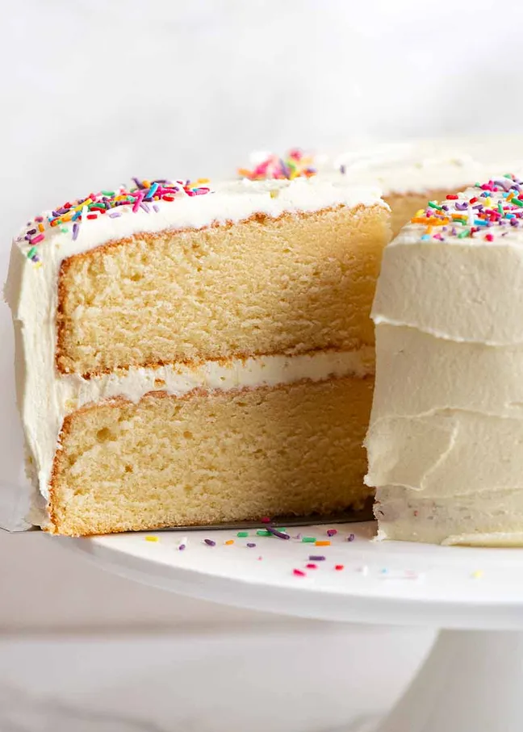

Vanilla Sponge Recipe
Home

Description
A light, fluffy and moist vanilla sponge cake that is perfect for any occasion.
Ingredients
- Plain / all purpose flour – compared to cake flour, the flavour of the butter and vanilla comes through better, the crumb is slightly more velvety AND it keeps slightly more moist too. Bonus: no need to hunt down / pay a premium for cake flour! Do not substitute with self raising flour or gluten free flour.
- Eggs – whipped to aerate, these are key to make the cake extraordinarily light and fluffy. You don’t get an eggy flavour;
- Baking powder – not baking soda (bi-carb), it doesn’t rise as well. This is our safety net, extra helping hand to make the cake rise.
- Milk, full fat – just plain cow milk. Low fat works as well but rises marginally less. Do not substitute with non dairy milk or buttermilk;
- Sugar – best to use caster / superfine sugar if you can because it dissolves better in the eggs. But regular / granulated sugar works just fine too – you may just end up with some little brown spots on the base;
- Oil – just 1 tablespoon adds a noticeable hint of extra moistness, especially on Day 4, without weighing down the cake in the slightest. Don’t be tempted to add more – I tried an extra tablespoon and it didn’t rise as well;
- Vanilla extract – the best you can afford. Imitation will work just fine, but the flavour isn’t as pure or real. I use Queen Vanilla Extract. Don’t waste your money on vanilla beans or vanilla bean paste – it’s not worth it for cakes.
Steps
- Whip the eggs and sugar – Beat the eggs with sugar for a whole 7 minutes until thick and glossy, it changes from yellow to white, and tripled in volume (just over double depth in the bowl).
The aeration created during this step is key for a soft, fluffy crumb. This is a technique borrowed from Japanese sponge cakes.
TOP TIP: After this step, keep beating to a minimum otherwise you’ll knock the air out. Just follow my time and beater speeds and you can’t go wrong!
- Gradually add flour – Whisk together the flour, baking powder and salt. Then add into egg mixture in 3 lots, mixing for just 5 seconds on Speed 1 in between. This should make the flour just incorporated – don’t worry if there are some bits not mixed in.
- Hot melted butter in milk – use a microwave or stove to heat milk with the butter until it melts. Believe it or not, HOT milk helps with aeration in this cake. I doubted it, so I tried with cooled melted butter in milk and found it did not rise as well.
The use of hot milk with melted butter in a cake batter is another technique used in some types of Japanese sponge cakes (such as this one from Chopstick Chronicles, a Japanese food blog). Interestingly, I recently discovered it is also used in a traditional Southern cake called Hot Milk Cakes.
- Mix some batter into hot milk – this serves two purposes: a) bring down the temperature of the hot milk so it won’t “cook” the eggs (ie. tempering); and b) it lightens up the density of the hot milk (see above – it becomes foamy) so it blends together faster when added to the rest of the whipped egg mixture. Remember, minimal beating is key so we don’t knock out the cake-rising-bubbles we created in Step 1.
The melted butter in hot milk infuses this cake with beautiful subtle buttery flavour without the greasy mouthfeel inherent with butter cakes.
- Slowly pour milk mixture back into whipped eggs over 20 seconds on Speed 1. Scrape down sides of bowls, then mix for 10 seconds on Speed 1 – the batter should now be smooth;
- Pour into 2 cake pans lined with parchment/baking paper.
This cake can be made in various pan sizes, bundt pans and also makes perfect cupcakes. Click here for a handy table of different sizes, bake times and cake height (including 3 layer cakes).
- {Optional} Knock out big air bubbles by dropping the cake pans on the counter 3 times. This won’t affect the cake-rising bubbles created in Step 1. But it makes large bubbles in the batter rise to the surface and burst.
If you don’t do this, you end up with maybe 6 or so large bubbles on the cake surface that go brown, and more unsightly large air pockets in the crumb. The surface blemishes don’t really matter if you are frosting. But if you’re not frosting the cake (eg just dusting with icing sugar / powdered sugar), you may care.
- Bake 30 minutes until golden brown and a toothpick inserted into the middle comes out clean. The cake will have a slight dome but it flattens when it cools.
You may get the faintest cracks on the surface, like you can see in the middle of the left cake in the photo above. That can occur if your oven doesn’t distribute heat evenly (my left front is hotter). But don’t fret – once the cake cools and the slight dome flattens, the cracks will disappear.
- COOL upside down for level cakes (so you have neat, straight layers in a layer cake) on a cooling rack. If you don’t mind a slight dome surface / specifically want to show the beautiful golden brown surface (eg if making a cake dusted with icing sugar / powdered sugar, or a glaze), then cool it right side up;
- Decorate! Frost with your favourite frosting, smother with cream, fresh berries, swirl with chocolate fudge frosting or simply dust with icing sugar and serve with a dollop of yogurt or cream!